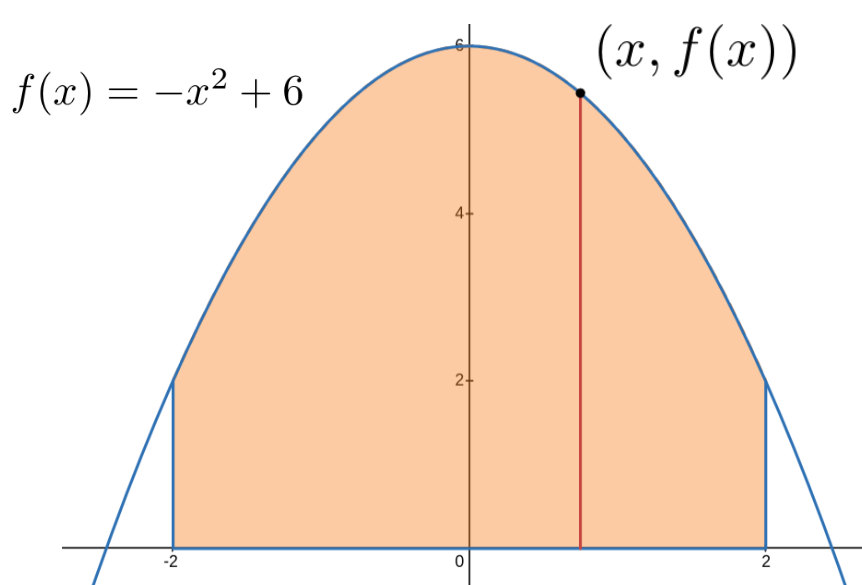
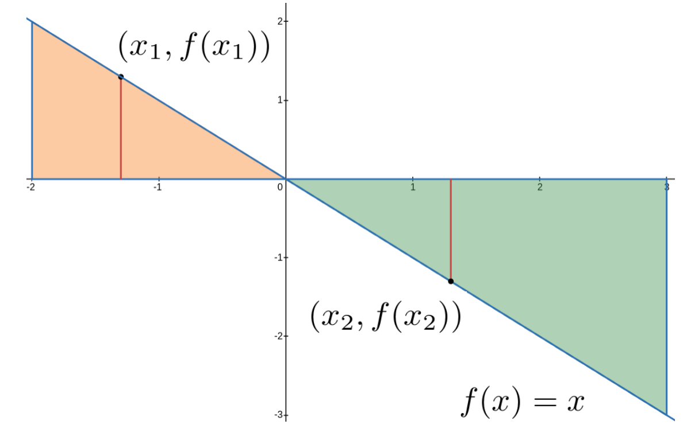

began investigating the use of what they called “indivisibles” as a tool for mathematical investigations. Today the best known such mathematician was, of course, Galileo 3
https://mathshistory.st-andrews.ac.uk/Galileo
whom we have seen before.
But the investigations of two others will be of interest to us. Both Bonaventura Cavalieri, and Evangelista Torricelli were deeply influenced by the work and ideas of Galileo.
Torricelli lived with and assisted Galileo during the final months of Galileo’s life. Cavalieri only met Galileo once but they exchanged a long correspondence over the years. We will look closely at Cavalieri’s ideas here, and return to Torricelli’s in section [provisional cross-reference: Torricelli].
Subsection21.1.1Bonaventura Cavalieri and Indivisibles
. It was Castelli who introduced Cavalieri to Galileo’s methods. Cavalieri’s ideas were deep, fundamental, and direct precursors to the notion of a differential so it is worthwhile to learn a bit about them before we go on.
In simple terms Cavalieri said that we can compute the area of a planar region by summing up “all of the lines” that make up the region. Similarly, we can compute the volume of a solid by summing up “all of the planes” that make it up. An example will be helpful.
Example21.1.1.2.Cavalieri’s Principle.
Cavalieri began with the simple observation, seen in Figure 21.1.1.3, that since a rectangle is composed of lines, the area of the rectangle is equal to the sum of “all the lines” that make it up.
Figure21.1.1.3.Cavalieri asserted that the area of the rectangle is composed of (infinitely many) horizontal lines. We have only drawn finitely many in this figure and we have separated the lines so they can be seen.
He was careful not to say that the area of the rectangle is equal to the sum of the areas of the lines. He knew, as we do, that this would be problematic since line segments do not have an area, and this would have led him into logical contradictions. Instead, like Newton and Leibniz later, he simply acknowledged the contradictions and then ignored them, proceeding as if line segments do have area.
If we accept this premise then clearly any other shape we can create using the same lines will have the same area. For example the sketch below shows the parallelogram constructed from the same lines that make up the rectangle in Figure 21.1.1.3. Clearly both have the same area.
Nor is it necessary for the shape to be “regular” in any sense. The following shapes will also have the same area as long as “all the lines” are the same.
The same idea can be used to compare volumes. For example the image below shows two pictures of the same deck of cards. Obviously the volumes of the stacks are the same since they are made of the same of cards.
Figure21.1.1.4.
Generalizing the ideas in Example 21.1.1.2 slightly gives us Cavalieri’s Principle.
Principle21.1.1.5.Cavalieri’s Principle.
If the cross–sectional areas of the corresponding slices of two solid figures are all in the same proportion, say \(P\text{,}\) then the proportion of the volumes of the two figures will also be \(P\) provided both figures have the same height.
For the deck of cards shown above the proportion, \(P\text{,}\) is equal to one. If the cards had been cut in half before making the second stack then \(P=1/2\) and the second stack would have half the volume of the first.
Cavalieri’s treatise on the method of indivisibles is voluble and not clearly written, and it is not easy to learn from it precisely what Cavalieri meant by an ‘indivisible’.
It is likely that this is because Cavalieri was himself unsure what an “indivisible” should be. Nevertheless the fundamental notion of an indivisible was picked up by Leibniz who transformed it into his Calculus Differentialis.
Drill21.1.1.6.
Cavalieri’s Principle 21.1.1.5 is normally stated in terms of volumes of solids, as we have here, but it is equally applicable to the areas of planar regions.
State Cavalieri’s Principle for the area of planar regions.
Example21.1.1.7.Circles and Ellipses.
To see how Cavalieri used his principle we will find the area enclosed by an ellipse by comparing it to the known area of a related circle.
Show that the volume of the solid in Figure 21.1.1.10 is \(\frac23 \pi r^3\text{.}\)
Hint.
You will need a formula for the volume of the cylinder and a formula for the volume of the cone deleted from it.
(c)
Use Cavalieri’s Principle 21.1.1.5 to conclude that the volume of a sphere with radius \(r\) is \(\frac43 \pi r^3\text{.}\)
Subsection21.1.2Cavalieri, Differentials, and Definite Integration
In view of our discussion in Section 18.1 it should be clear that the “indivisibles” Cavalieri’s is “adding up” are differentials. For example, in Figure 21.1.1.3 it is clear that the lines have no width but somehow their “sum” will be a non-zero area. Instead of zero, we will think of the width a line as a differential, say \(\dx{x}\text{.}\)
In that case a rectangle consists of “all the lines” with differential area:
Notice that the real number, height, multiplied by differential \(\dx{x}\) is a differential as we observed in DIGRESSION:Differential Notation.
But the formula above doesn’t quite give us everything we’d like. An example will be helpful.
Example21.1.2.1.
To see what we mean suppose we want to express the area of a rectangle with height equal to \(2\) and width equal to \(4\text{.}\)
We begin by embedding our rectangle in an \(x-y\) coordinate system. In the sketch below the red rectangle is one of Cavalieri’s “all the lines” that make up the rectangle.
Clearly the “area” of this line is \(2\dx{x}\text{,}\) so the area of the entire rectangle must be given by the sum of these, or
Moreover, since this is a \(2\times 4\) rectangle we must have \(\int 2\dx{x} =8\text{,}\) right?
This is correct but there is a problem with our notation. Do you see it? If our rectangle had different dimensions, say \(2\times
5\text{,}\) then \(\int 2\dx{x}\) would be equal to \(10\text{.}\) A notation that uses exactly the same symbols to represent two different numbers is inconvenient at best.
But it gets worse! Recall that in formula (21.3) we used exactly the same notation to represent the most general antiderivative (multifunction) of \(f(x)= 2\text{,}\) which is \(2x+C\text{.}\)
We can’t have this. The meaning of the expression \(\int 2\dx{t}\) can’t be \(8\) sometimes, \(10\) at other times, and a multifunction at yet other times. Our notation needs to be unambiguous.
Subsection21.1.3TRY ONE; Functions, Multifunctions and Integral Notation
Because areas and antiderivatives are related we will define several variations on the basic summation symbol originally invented by Leibniz.
Definition21.1.3.1.Indefinite Integral.
Given \(f(x)\) the formula
\begin{equation*}
\int f(x)\dx{x}
\end{equation*}
always represents the multifunction whose derivative is \(f(x)\text{.}\)
For simplicity, and because it has become standard, we will almost always refer to \(\int f(x)\dx{x}\) as the indefinite integral of \(f(x)\text{,}\) rather than as a multifunction.
Because \(f(x)\) and \(\int f(x)\dx{x}\) are so closely related it is common to define
and call \(F(x)\) the indefinite integral of \(f(x)\text{,}\) just because it is less to write.
Once Definition 21.1.3.1 is in place we see immediately that the formula \(\int 2\dx{x}\) from Example 21.1.2.1 now represents an indefinite integral, by definition. This is not what we want.
It has some other rather serious shortcomings as well. In particular, the base of our rectangle lies on the line segment \([2,6]\) (for a length of \(4\)) but nothing in our formula indicates this fact. So, to make it explicit that we want to begin summing Cavalieri’s “lines” at \(x=2\) and end at \(x=6\) we’ll insert the endpoints of the interval into the notation like this:
represents the sum of “all the lines” enclosed by the \(x\)-axis and the graph of \(f(x)\text{,}\) beginning at \(x=a\) and ending at \(x=b\text{.}\) Such an expression is called a definite integral.
Take care to notice that, although the notations in Definition 21.1.3.1 and Definition 21.1.3.2 are very similar, but that the objects being defined are very different. An indefinite integral is a multifunction. A definite integral is a number. The reason the notations are so similar is that they are both built via (infinite) summation of differentials (Cavalieri’s “lines”).
When we speak of an indefinite integral we are thinking of integration as antidifferentiation as in Subsection 18.1.2. When we talk about a definite integral we are thinking of integration as summation as in Subsection 18.1.1.
In the case of Example 21.1.2.1 we sum the differentials \(2\dx{x}\) from \(2\) to \(6\text{.}\) Because the integral in that example represents the area of a \(4\times 2\) rectangle result should be \(4\times
2=8\text{.}\)
But notice that we haven’t yet indicated how we would compute this from the integral. We will address the problem of computing the value of an integral next but first a few examples of definite integrals will be illustrative.‘.
Example21.1.3.3.Some Definite Integrals are Areas.
To see this observe that the red line segment is one of the “lines” in Cavalieri’s sum. The length of the red line is given by \(f(x)\) because \(f(x)\) is positive in this case. Thus summing “all the lines,” per Cavalieri is the same as summing the differentials, \(f(x)\dx{x} \text{,}\) which is the meaning of
represents the area in the following sketch. Once again observe that the red line segment is one of the “lines” in Cavalieri’s sum.

As in part (a) the sum of “all the lines” is equal to \(\int_{x=-2}^{2} f(x)\dx{x}\text{.}\)
Example21.1.3.4.Not All Definite Integrals are Areas.
It is traditional to show students how to use the definite integral to compute the areas of geometric figures. This is apparently a simple application that you are already familiar with from your previous studies. Unfortunately this often has the unfortunate side effect of giving the impression that a definite integral is always an area. That is not true.
(a)
To see this suppose that a car is traveling in a straight line with velocity \(v(t)
\frac{\text{miles}}{\text{hour} }\) between time \(t=t_0\) and \(t=t_1\text{.}\) We can find the distance traveled in the interval \([t_0, t_1]\) by summing the distance traveled at each instant of travel.
That is, we assume that time, consists of infinitesimal moments we’ll call \(\dx{t}\text{.}\) During a single such moment the velocity will be constantly equal \(v(t)\) and when the velocity is constant we know that
if an instant is the time If \(v(t)\) were a constant, say \(60
\frac{\text{miles}}{\text{hour}} \) this would simply be a (D)istance \(=\) (R)ate \(\times \) (T)ime problem, but of course we didn’t specify \(v(t)\) so we can’t just assume that the velocity is constant. However during an instantaneous interval \([t, t+\dx{t}]\) the velocity is constant, so during any such time interval the distance traveled will be the velocity, \(v(t)\text{,}\) times the elapsed time. On any time interval \([t,
t+\dx{t}]\) the
does not represent an area. Before we explain further see if you can guess why not.
If we sketch this example as before we get the sketch below. Again the red lines represent two of Cavalieri’s “lines.”

Just as in Example 21.1.3.3 the length of the line in the tan colored region at the left will be given by \(f(x_1)\text{.}\) Thus the definite integral
\begin{equation*}
\int_{x=-2}^0f(x)\dx{x} \text{ (note the upper index)
}
\end{equation*}
represents the area of the tan colored region, as before.
However on the right side of the graph \(f(x_2)\) is not equal to the length of Cavalieri’s “line” because \(f(x_2)\) is clearly negative (it is below the \(x\)-axis). But the length of a line segment is always positive. And this is true for every Cavalieri “line” in the green region on the right. Thus if we compute
we will get a negative number. Since areas are always positive this can clearly not be the area of the green region.
It should be clear however that \(\int_{x=0}^3-f(x)\dx{x} \) will be the area of the green region. Do you see why?
This is because for every value of \(x\) in the green region the absolute value of \(f(x)\) will be the length of the Cavalieri “line.” And since \(f(x)\lt0 \) we see that in the green region \(-f(x)\) is the length of the Cavalieri “line.” Thus the area of the green region is given by
But as we saw in Example 21.1.2.1 the expression \(\int 2t\dx{t}\) can also indicate the solution of the differential equation is To accomplish this we need to solve the differential equation \(\dfdx{y}{t}=2t \) to find the multifunction and then find the particular function which satisfies the initial condition \(y(0)=4\text{.}\)
As we saw in Example 18.1.2.2 the expression \(\int 2t\dx{t} \) represents the most general antiderivative (a multifunction) of \(f(t)=2t\text{.}\)
Since \(y(t)=\int 2t\dx{t} \) and \(y(0)=5 \) we know that the particular function we seek satisfies
While our evaluation notation is clear, an expression like \(\eval{\int f(t)\dx{t}}{t}{a}\) is rather clumsy. So we introduce the following slightly more convenient notation:
Together equations (21.5) and (21.6) describe the solution of IVP (21.4), but this is not a very useful description since all we’ve really done is re-express IVP (21.4) in new notation.
Equation (21.5) merely says that the solution of IVP (21.4) is one of the antiderivatives of \(=2t\text{,}\) and equation (21.6) simply restates the initial condition.
would be the most we can say. But from Example 18.1.2.2 we also know that \(y(t)\) has the form
The advantage of this notation may not be clear to you yet but as we proceed you will see that it is very helpful, particularly in the context of Definite Integration which we will return to in Chapter 21.
Conceptually, it is all well and good to say that the area is the sum of “all the lines” that make it up. But faced with a real problem we’ll need more information than that. In particular, we need to know which lines we’re summing. That is, we need to know where to start summing the differential areas (lines) and where to stop.
Since \(\int 2\dx{x}\) is the most general antiderivative
Similar considerations lead the mathematician Joseph Fourier 10
The indices in this expression tell us that we begin summing the differential \(2\dx{x}\) at \(x=2\) and stop at \(x=6\text{.}\)
Notice that, despite the complexity of the notation, expressions like formula (21.9) simply represent a specific, or definite number; eight in this case. This is why they are called definite integrals.
without the indices, represent functions as we saw in Chapter 20. Integrals without indices are called indefinite integrals to distinquish them from definite integrals with indices. In Chapter 20 we just called them integrals because they were the only kind we had encountered at the time.